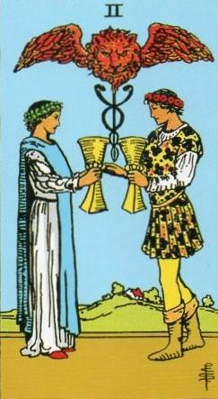
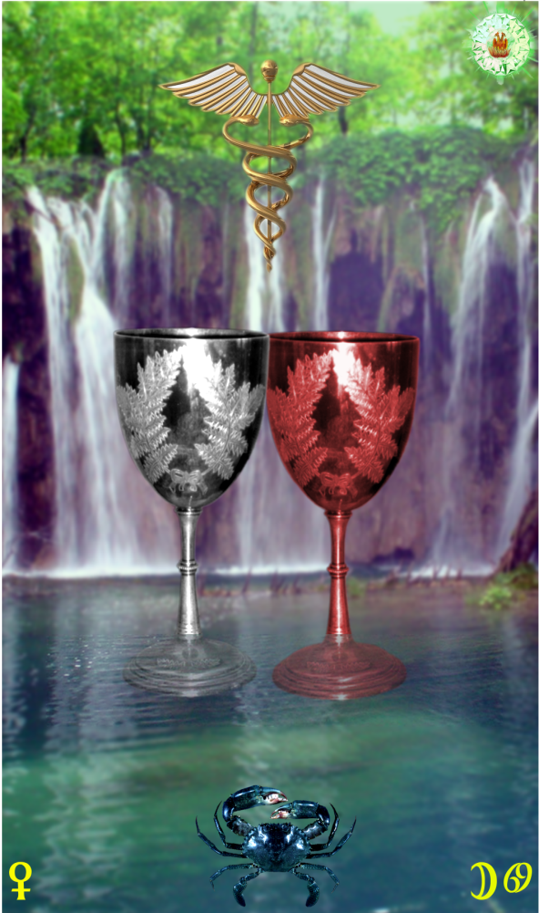
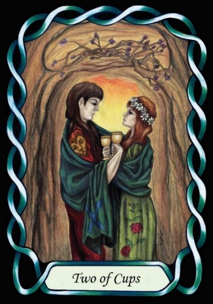

Two of Cups



Sign |
|
Four: Home |
|
Sign Ruler |
|
Element |
Water: emotions |
Modality |
|
Symbol |
Crab |
Decan |
|
Decan Ruler |
|
Time |
Jun 22 - Jul 1 |
Empath Cancer I
An Apprentice of emotions, influenced by the Moon and Venus, can be easily overwhelmed by passion and lust. They may also be too eager to settle into married life. This can result in poor early choices of partner. Like the snakes in the Caduceus, there may be conflict between partners until maturity is found, and the opposites are pacified. The Caduceus relates to a myth of Hermes, in which two snakes were fighting. He touched them with his staff, and they were reconciled and wound around the staff.
Two people achieve emotional harmony through empathy for each other’s feelings, much as the staff of Hermes/Mercury brought two warring snakes to peace.
“I recognise your point of view”
A well-matched love, and strong emotions, including lust, through Venus’ female sexuality.
Cancers the only sign ruled by the Moon, just as Leo Is the only sign ruled by the Sun. The attraction between them can be very strong, even though they are poles apart. It will take a lot of understanding to make the relationship work.
Goldschneider Personology
Those born in this week are of strong emotions. They are emotionally aware, of themselves and others, that their own emotions can be influenced subconsciously by the emotions of others. They are empaths, to the point that they must learn to separate what they are feeling from what others are feeling, in order to keep their identity.
RWS Imagery
A Caduceus over a woman and man, who bump Cups.
Pymander Interpretation
Strong emotions, passion, lust, but also a tension between widely separated polarities.
Summary
Unifying Love